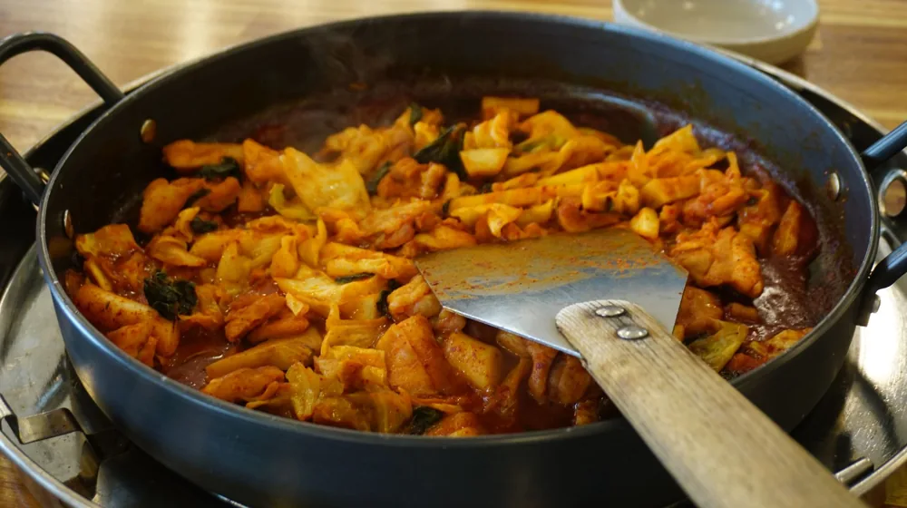

집들이 요리 고민 끝! 초보도 성공하는 메뉴와 준비 팁 3가지
사진: Jacqueline Goncalves / Pexels (무료 이미지, 출처 표기)
집들이 요리, 이것부터 고려하세요

새로운 보금자리에서 손님을 맞이하는 집들이는 설레면서도 동시에 요리 메뉴 선정에 대한 부담을 안겨줍니다. 어떤 음식을 해야 손님들이 만족하고, 또 주방에서 헤매지 않고 즐거운 시간을 보낼 수 있을지 막막하게 느껴질 수 있습니다. 하지만 몇 가지 핵심 포인트를 고려하면 초보자도 성공적인 집들이 상차림을 완성할 수 있습니다.
가장 먼저 손님의 구성과 취향을 파악하는 것이 중요합니다. 어린이, 어르신, 채식주의자 등 특정 식성이 있는 손님이 있는지 확인하여 모두가 만족할 수 있는 메뉴를 구성해야 합니다. 또한, 요리 난이도와 소요 시간을 고려하여 주최자가 너무 지치지 않도록 미리 준비 가능한 메뉴를 선택하는 지혜가 필요합니다.
실패 없는 집들이 메인 요리 추천
집들이 상차림의 중심이 되는 메인 요리는 손님들의 만족도를 좌우합니다. 2026년 08월 기준으로 많은 사람들이 선호하며 비교적 준비가 쉬운 메뉴들을 추천해 드립니다. 호불호가 적고, 미리 준비해둘 수 있어 당일 부담을 덜 수 있는 메뉴들입니다.
이 메뉴들은 손이 많이 가는 것처럼 보이지만, 대부분 재료 손질을 미리 해두거나 양념을 전날 재워두는 방식으로 당일 주방에서 보내는 시간을 크게 줄일 수 있습니다. 특히 밀푀유나베나 감바스처럼 테이블 위에서 직접 조리하거나 따뜻하게 데울 수 있는 메뉴는 손님들에게 특별한 경험을 선사합니다.
상차림 풍성하게 채우는 사이드 메뉴와 꿀팁
메인 요리만큼이나 중요한 것이 바로 사이드 메뉴입니다. 상차림을 더욱 풍성하고 다채롭게 만들어주며, 메인 요리와의 균형을 맞춰줍니다. 손님들이 부담 없이 즐길 수 있는 가볍고 신선한 메뉴들을 활용해 보세요.
- 잡채: 손이 많이 가지만 미리 만들어 두었다가 데워낼 수 있습니다. 당면이 불지 않도록 마지막에 넣거나, 재료를 따로 볶아 보관 후 버무리는 방법을 추천합니다.
- 월남쌈 또는 카프레제 샐러드: 신선한 채소와 단백질을 함께 섭취할 수 있어 건강하고 보기에도 좋습니다. 재료 손질 후 접시에 예쁘게 담기만 하면 되어 조리 부담이 적습니다.
- 과일 샐러드 또는 신선한 과일: 입맛을 돋우거나 식사 후 상큼함을 더해줍니다. 다양한 색깔의 과일을 활용하면 시각적으로도 좋습니다. 드레싱은 따로 준비하여 취향에 따라 선택하게 하세요.
- 간단한 한입 요리: 크래커 위에 치즈와 과일을 올리거나, 에어프라이어에 돌리는 만두, 튀김류 등은 술안주로도 좋습니다. 시판 제품을 활용하면 시간을 크게 절약할 수 있습니다.
사이드 메뉴는 메인 요리와의 조화를 고려하되, 겹치지 않는 맛과 식감을 선택하는 것이 좋습니다. 예를 들어, 메인으로 고기 요리를 준비했다면 사이드는 샐러드나 해산물 위주로 구성하는 식입니다.
음료와 디저트, 센스를 더하는 마무리
음료와 디저트는 집들이 상차림의 마지막을 장식하며 손님들에게 좋은 인상을 남길 수 있는 부분입니다. 요리만큼 많은 노력을 들이지 않아도 센스를 보여줄 수 있습니다.
음료는 물, 탄산음료, 주스 등 기본적인 것들을 준비하고, 손님들이 선호하는 주류(맥주, 와인, 소주 등)가 있다면 함께 준비하는 것이 좋습니다. 커피나 차도 식사 후에 곁들이면 좋습니다. 디저트는 신선한 제철 과일을 푸짐하게 내놓는 것만으로도 충분합니다. 여기에 작은 조각 케이크, 마카롱, 쿠키 등 베이커리류를 곁들이면 더욱 좋습니다. 직접 만들기 어렵다면 유명 베이커리에서 구매하는 것도 좋은 방법입니다. 2026년 08월 현재, 온라인 배송을 통해 집까지 받아볼 수 있는 프리미엄 디저트들도 많습니다.
집들이 요리 시간 관리와 준비 체크리스트
성공적인 집들이의 핵심은 효율적인 시간 관리와 철저한 사전 준비에 있습니다. 당일에 우왕좌왕하지 않도록 아래 체크리스트를 참고하여 차근차근 준비해 보세요.
D-3일 (3일 전)
- 손님 명단 확정 및 초대 메시지 발송
- 메뉴 확정 및 장보기 목록 작성
- 미리 준비 가능한 재료(고기 재우기, 채소 손질 등) 구매 및 손질
- 식기류, 컵, 수저 등 필요한 물품 확인 및 부족한 경우 구매
D-1일 (하루 전)
- 메인 요리 재료 양념에 재워두기
- 일부 사이드 메뉴(잡채, 샐러드 재료 손질) 준비
- 음료 및 디저트 구매
- 테이블 세팅 및 주방 동선 구상
- 집 안 청소 및 정리
D-day (집들이 당일)
- 오전에 미리 조리 가능한 메뉴(잡채, 샐러드 드레싱 등) 마무리
- 메인 요리 조리 시작 (가장 오래 걸리는 것부터)
- 에어프라이어, 오븐 등을 활용하여 효율적으로 조리
- 손님 도착 30분 전, 모든 요리 세팅 및 따뜻하게 유지
- 음료와 디저트는 식사 후 제공할 수 있도록 대기
이 체크리스트는 일반적인 가이드이며, 실제 준비 과정은 선택한 메뉴와 손님 수에 따라 달라질 수 있습니다. 유동적으로 계획을 조절하여 무리 없이 집들이를 준비하시길 바랍니다.
집들이 요리 메뉴, 이것만 기억하세요
집들이 요리를 준비하는 것은 손님들에게 정성을 보여주는 좋은 기회이지만, 무엇보다 중요한 것은 주최자와 손님 모두가 즐거운 시간을 보내는 것입니다. 너무 완벽한 상차림에 대한 강박 대신, 내가 잘 할 수 있는 요리를 선택하고, 부족한 부분은 밀키트나 반조리 식품, 배달 서비스를 적극 활용하는 것도 현명한 방법입니다.
음식 하나하나에 사랑을 담아 정성껏 준비하고, 부족한 점이 있더라도 유쾌하게 넘어가면 더욱 기억에 남는 집들이가 될 것입니다. 2026년 08월 기준으로 다양하게 출시되는 간편식 제품들도 훌륭한 대안이 될 수 있으니, 자신에게 맞는 최적의 방법을 찾아 즐거운 집들이를 만드시길 바랍니다. 정확한 제품 정보나 서비스 이용은 각 업체의 공식 홈페이지를 통해 다시 확인하시길 권장합니다.
🔗 이 글도 함께 보면 좋아요: 혼자 떠나는 여행, 놓치면 후회할 준비물 7가지와 안전 팁!
관련 추천 상품
집들이 밀키트, 간편 집들이 음식, 초대 요리 세트 관련 인기 상품 보러가기
이 포스팅은 쿠팡 파트너스 활동의 일환으로, 이에 따른 일정액의 수수료를 제공받습니다.